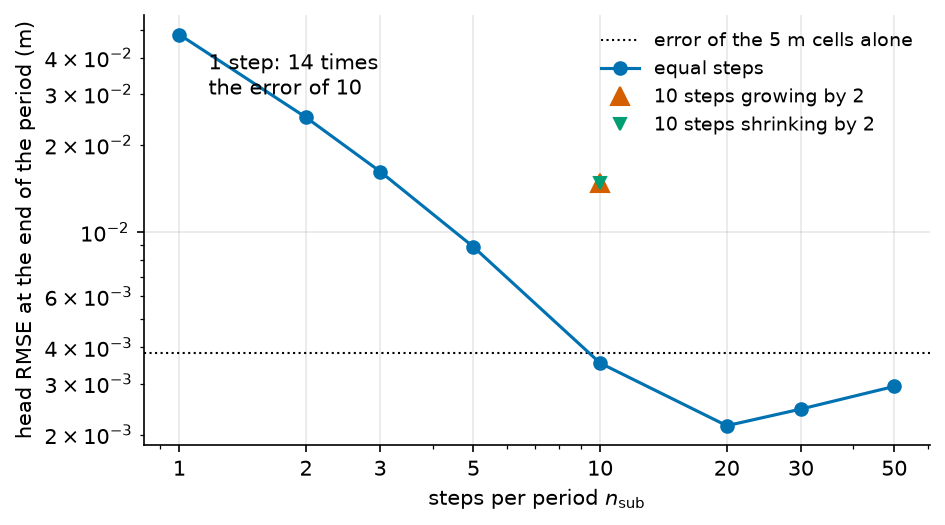

The solvers of the aquifer#
HydroModPy integrates the groundwater flow equation with one of three solvers: MODFLOW 6, MODFLOW-NWT or the in-house Boussinesq solver. This page says which packages and options HydroModPy writes for each of them, how it sets the time steps, what happens to a cell that dries, how the two MODFLOW solvers differ, and how a transport run hooks onto a flow run. What each solver supports is listed in Solvers.
Note
Scope. The balance of a cell, (17), is on The groundwater flow problem. The Boussinesq solver is on Boussinesq theory and the XT3D terms on XT3D on irregular meshes.
Sources#
The MODFLOW equations, packages and numerical methods are documented by the USGS. This page does not repeat them. It says which options HydroModPy writes.
MODFLOW 6 groundwater flow model: control-volume formulation, Newton-Raphson, storage and stress packages [Langevin et al., 2017].
MODFLOW 6 framework and the IMS linear solver [Hughes et al., 2017].
XT3D option of the
NPFpackage [Provost et al., 2017].MODFLOW-NWT, the Newton formulation of MODFLOW-2005 [Niswonger et al., 2011], on the MODFLOW-2005 groundwater flow process [Harbaugh, 2005].
MODFLOW 6 groundwater transport model [Langevin et al., 2022] and water mover package [Morway et al., 2021].
The MODFLOW 6 input guide and the MODFLOW-NWT guide, for the definition of each package and option.
The three solvers side by side#
MODFLOW 6 |
MODFLOW-NWT |
Boussinesq |
|
|---|---|---|---|
Name in |
|
|
|
Grid |
DISV for every grid, structured or not |
structured grid only (DIS) |
triangular cells of a Gmsh mesh |
Time |
backward Euler, equal steps in a period |
backward Euler, equal steps in a period |
one backward Euler step per period |
Transport |
GWT and particle tracking |
MODPATH and MT3DMS |
refused |
The names in the first row are the values read by simulation.process.solvers. The
capabilities of each solver, generated from the code, are on Solvers.
Notation of this page
Lengths are in metres and time is in seconds: the run is written in seconds whatever the calendar of the file.
Symbol |
Meaning |
Unit |
Set by |
|---|---|---|---|
\(\Delta t\) |
length of a stress period, the stretch of time that gets one forcing value |
s |
|
\(\delta t\) |
solver time step, \(\delta t = \Delta t / n_\mathrm{sub}\) |
s |
derived |
\(n_\mathrm{sub}\) |
number of solver time steps in a stress period |
||
\(z_\mathrm{top}\) |
model top, the land surface |
m |
|
\(z'_\mathrm{top}\) |
computational top MODFLOW 6 reads, \(z'_\mathrm{top} = z_\mathrm{top} + \max H_1 - H_1\) |
m |
derived |
\(H\) |
aquifer thickness, \(H = z_\mathrm{top} - z_\mathrm{bot}\) |
m |
|
\(H_1\) |
thickness of the top layer under the ground |
m |
|
\(K\) |
horizontal hydraulic conductivity, the same along \(x\) and \(y\) |
m/s |
|
\(K_z\) |
vertical hydraulic conductivity, \(K / \beta\), or the parameter with the id |
m/s |
|
\(\beta\) |
ratio \(K / K_z\) |
||
\(S_s\) |
specific storage |
1/m |
|
\(S_y\) |
specific yield |
Time steps#
The three solvers read the same time grid, built from simulation.time. Each
stress period has a length \(\Delta t\) and holds every forcing constant. The two MODFLOW
solvers cut it into \(n_\mathrm{sub}\) equal steps, \(\delta t = \Delta t / n_\mathrm{sub}\),
with a step multiplier of 1: MODFLOW 6 in its TDIS
package, MODFLOW-NWT in DIS.
Equal steps are a choice with a test behind it. On a confined column against a closed-form
solution, test_stress_period_substepping finds equal steps more accurate than a geometric
growth of the steps, in either direction, and one step per period about ten times less
accurate than ten steps (Validation). The unconfined problem is nonlinear, so this
holds there only approximately. The same case reports that one step per period moves the
monthly discharge of a drained hillslope by tens of per cent against a refined run. One
step per period is therefore not a neutral choice.

Fig. 41 The confined column of test_stress_period_substepping: 200 cells of 5 m, a
head step of 1 m held for 31 days, with the backward Euler equations MODFLOW 6 solves
for this linear case. Ten steps that grow or shrink by 2 give the same error, about
four times that of ten equal steps.#
A period is steady or transient. With flow.flow_regime set to "steady", every
period is steady. With "transient", only the first period is steady, and only when
flow.first_period_steady is true. With modflow6.runtime.mf6_ats, MODFLOW 6
adds adaptive time stepping
to the transient periods: each period starts at the step above, ATS subdivides it only where
the solver cannot converge, and it never grows past that step. Steady periods are left out.
The starting heads are on The starting heads. In the code:
build_temporal_discretization_from_time_grid.
The nonlinear solve#
MODFLOW 6 and MODFLOW-NWT both write the balance (17) for every active cell and every step, and solve the nonlinear system by Newton-Raphson outer iterations, with a linear solve inside each one [Hughes et al., 2017, Niswonger et al., 2011]. The tests that stop the iteration and the percent discrepancy of the budget are the ones of the listing file, defined in the sources above. They do not measure the same thing on the two solvers: MODFLOW-NWT tests a norm of the residual over all cells, MODFLOW 6 a maximum over the cells of the linear solve. What HydroModPy adds:
The keys that set the tests are
modflow6.runtime.mf6_outer_dvclose,modflow6.runtime.mf6_inner_dvcloseandmodflow6.runtime.mf6_inner_rclosefor MODFLOW 6, andmodflownwt.runtime.nwt.headtolandmodflownwt.runtime.nwt.fluxtolfor MODFLOW-NWT. Heads are in m, flows in m³/s. HydroModPy writesinner_rclosewith no option, which keeps the absolute largest residual of a cell. When the key is unset, the value of the complexity preset applies.The run metrics keep the percent discrepancy of the last step and the worst one of the run. A calibration rejects a trial whose last value is above
calibration.reject_water_budget_above. The auxiliary steady solve of asteady_statestart accepts its result only within 0.1 per cent. In the code:percent_discrepancies.
MODFLOW 6, package by package#
run_pre_processing assembles the FloPy simulation in this order. A package marked “if”
is written only when the file asks for it. Each package name links its input-guide page.
Package |
Written |
|---|---|
TDIS, IMS, GWF (the Newton options), DISV, IC, NPF, STO, RCHA, OC |
always |
if |
|
if |
|
if the |
|
if one is active |
|
if a well exists |
|
if a lake is active |
|
if a barrier exists |
|
if |
|
if one transfer exists |
HydroModPy writes no UZF, GHB or RIV package. Three notes on the table.
Storage. STO receives \(S_y\) and \(S_s\) and a steady or transient flag per period. The flags are written only where they change. \(S_s\) matters only where the aquifer is confined, but MODFLOW 6 asks for a value. In the code:
sto_period_settings.Recharge. RCHA gets one rate per column and per period: the value of
flow.sinks_sources.recharge.values, or the recharge the soil reservoir computes (The daily soil reservoir). The cells of a lake that the model makes inactive receive none, because LAK handles the rain on the lake. The package also carries aCONCENTRATIONauxiliary variable, which transport uses (Transport coupling). In the code:mask_recharge_on_lake_cells.Output. OC saves the head at the last step of every stress period and the budget at every step, and prints the budget of every step. The catalog keeps one record per stress period: the head at its end, each flux as the mean of its steps weighted by their length (A period cut into time steps).
The grid#
MODFLOW 6 reads every grid as a DISV grid, structured or not: one code path covers both.
A structured model is a DISV grid whose cells are the DEM pixels. A mesh built from Gmsh
is, by default, the Voronoi dual of its triangles, which is orthogonal to its connections.
modflow6.sgrid.grid_dual keeps the triangles as cells instead. The number of
layers is modflow6.sgrid.vertical.nlay. The mesh is the subject of The mesh.
The computational top. Under Newton, MODFLOW 6 builds the horizontal conductance from
the full thickness of the two cells times the saturation of the upstream cell, where
MODFLOW-NWT and MODFLOW-USG use the saturated thickness
(GwfConductanceUtils.f90,
NPF) [Langevin et al., 2017].
Where the thickness \(H\) changes from one cell to the next, the transmissivity is then too
low by about \(\Delta H / (2H)\). The grid MODFLOW 6 reads therefore has a computational top
\(z'_\mathrm{top} = z_\mathrm{top} + \max H_1 - H_1\), with \(H_1\) the thickness of the top
layer under the ground: every cell of the top layer gets the same thickness. A thickness
that is the same everywhere gives \(z_\mathrm{top}\) back, so no file changes then. This is a
numerical device of HydroModPy, not a USGS practice. Every package elevation (drains, EVT,
streambeds, lake banks, barriers, the ocean), the initial heads and the run store keep the
ground. Water above the ground stays in the aquifer up to \(z'_\mathrm{top}\), with its
specific yield, where a cell topped at the ground would turn confined; the drains at the
ground keep that rise to a few centimetres. Two limits. A lake column keeps its ground, since a raised top would
reach into the lake, so the thickness still changes at the banks. Only the top of the top
layer moves: a lower layer whose saturated part changes from cell to cell keeps the bias.
Anyone who opens the native MODFLOW 6 files (flopy, ModelMuse) sees a top above the ground
wherever the thickness varies. That is intended; the ground is topography in the run
store. In the code: disv_grid_kwargs.
Flow between cells, and XT3D#
NPF receives \(K\), \(K_z = K/\beta\) and the convertible flag. With the two-point conductance
(18), the flux between two cells is exact only when the line between the
centres is perpendicular to the shared face and the conductivity is isotropic. XT3D adds
the missing terms [Provost et al., 2017]. HydroModPy decides about it once per run; the
rule and its trigger are on XT3D on irregular meshes. XT3D makes the
matrix non-symmetric, so the IMS preset is promoted when needed
(The solution: Newton and IMS). In the code: resolve_xt3d_decision.
Evaporation, drains, lakes and streams#
The laws, conductances and worked cells of these exits are on How water leaves the aquifer.
Evaporation. Under MODFLOW 6, EVTA receives a routed negative recharge (
flow.sinks_sources.recharge.negative_to_evt) or, in soil mode, the ETP the soil could not meet. The loaded ETP is ignored outside soil mode, with a warning (Drains and evapotranspiration at the top of the model).Drains. One drain in the first layer of every active cell that is not an ocean or stream constant-head cell. It sits at the ground surface or half a band depth below it.
solver.sink_fillsets it to zero in closed depressions (Drains and evapotranspiration at the top of the model). In the code:build_drain_stress_period_data.Lakes, streams and barriers. LAK, SFR, MVR and HFB exist under MODFLOW 6 only. LAK and SFR are built after the drains, so that the drains that coincide with a stream reach can be removed and the drainage of the hillslope can be handed to the stream or lake it flows to. MVR is built last, because it names the packages it moves water between (Lakes and reservoirs, Streams and the water mover).
Imposed heads and wells#
CHD imposes the head of the ocean, stream and lateral boundaries on their cells. MODFLOW 6
takes one CHD package, so the three supports are merged, and a cell claimed twice keeps
the head written last. WEL adds the rate of each well. Under the Newton formulation the
code sets auto_flow_reduce on WEL, so that a well that dewaters its cell tapers its
extraction instead of making the head oscillate across the threshold. MODFLOW 6 reads it as
a fraction of the cell height, and the option is one value per package: it is the
smallest fraction that keeps the interval within a tenth of the aquifer below the ground
in every well cell, 0.1 when the top is the ground. In the code:
assemble_constant_head_stress_period_data, well_flow_reduce_fraction.
The solution: Newton and IMS#
The code writes NEWTON, and adds UNDER_RELAXATION when
modflow6.runtime.mf6_newton_under_relaxation is true. Newton is on by default,
because every layer is convertible. The UNDER_RELAXATION of the Newton option damps the
head of a cell that Newton would push below its bottom. It is not the under-relaxation of
IMS, which adjusts the update factor of the outer iteration.
The code passes the closure criteria, the iteration limits and the optional
modflow6.runtime.mf6_linear_acceleration,
modflow6.runtime.mf6_under_relaxation and modflow6.runtime.mf6_inner_rclose
to the IMS package. The complexity, modflow6.runtime.mf6_ims_complexity, defaults
to COMPLEX. A configured SIMPLE complexity
is promoted to COMPLEX when XT3D is on, and to at least MODERATE under Newton, because
SIMPLE assumes a symmetric, well-conditioned matrix. Two combinations are refused:
modflow6.runtime.mf6_newtonandmodflow6.runtime.mf6_enable_rewettogether stop the run with[HMPY.E405]when the NPF package is built, because MODFLOW 6 forbids rewetting under the Newton formulation.Conjugate-gradient acceleration under Newton stops with
[HMPY.E406], because the Newton Jacobian is not symmetric and CG cannot solve it. The check runs before any grid is built. UseBICGSTAB, or leavemodflow6.runtime.mf6_linear_accelerationunset.
In the code: resolve_ims_complexity.
MODFLOW-NWT, package by package#
ModflowNwt builds the FloPy model in this order, and assemble_flopy_packages adds the
stress packages.
Package |
Written |
|---|---|
NWT: the Newton solver and its closure |
always |
DIS: the structured grid and the steps of Time steps |
always |
CHD: head imposed on the transient ocean and side cells |
if a transient boundary is active |
BAS: active cells ( |
always |
UPW: \(K\), \(K_z\), \(S_y\), \(S_s\) with upstream weighting |
always |
EVT |
if an ETP or a negative recharge exists |
RCH |
if a recharge exists |
DRN |
if the |
WEL |
if a well exists |
OC: head and budget at every step |
always |
LMT: the link file for MT3DMS |
only when an MT3DMS process follows |
The static ocean and side boundaries are not CHD rows. They are cells with a negative
ibound in BAS, which imposes the starting head on them. Four things differ from
MODFLOW 6.
The grid must be structured. NWT stops with
MODFLOW NWT requires a structured grid. A[mesh_catchment]section does not change that: the solver keeps the grid it builds from the DEM.The unconfined law is the upstream-weighted UPW package [Niswonger et al., 2011], with a smoothing of the saturated thickness set by
modflownwt.runtime.nwt.thickfact.EVT uses the topography. The code sets the EVT surface to the top lowered by
flow.sinks_sources.etp.surface_offsetand the extinction depth toflow.sinks_sources.etp.extinction_depth, withnevtopfrommodflownwt.runtime.evt.nevtop. The fieldmodflownwt.process_specific.exdpis declared but nothing in the code reads it. When no ETP is active, a routed negative recharge uses an offset of 2 m and a depth of 1 m.No soil reservoir, lakes, streams or barriers. The checks listed under Limits stop the file.
In the code: assemble_flopy_packages.
Wetting and drying#
A cell dries when the head falls to its bottom. Under Newton, MODFLOW 6 smooths the
saturated thickness near the bottom with a fraction of the thickness that it sets
internally, and HydroModPy has no key for it [Langevin et al., 2017]. MODFLOW-NWT does the
same in its SAT_THICK function, with the fraction read from
thickfact [Niswonger et al., 2011]. The smoothing
keeps the Newton step defined. It does not move the water table. The solvers differ in what
they do next.
Case |
What happens |
Set by |
|---|---|---|
MODFLOW 6, Newton |
The cell stays in the equations. Conductance and storage go to zero smoothly, and |
|
MODFLOW 6, standard formulation with rewet |
The cell is rewetted by the NPF rewet test. Newton must be off. |
|
MODFLOW-NWT |
The cell stays in the equations. A dry cell is written with the dry-head value, and the reader of the results turns that value into a missing value. |
|
Boussinesq |
The saturated thickness is bounded between zero and the cell thickness, without smoothing ((16)). |
the runtime, see Boussinesq theory |
Rewetting is off unless modflow6.runtime.mf6_enable_rewet is true. When it is on,
the NPF package gets WETFCT, IWETIT and IHDWET from the mf6_rewet_* keys, and an
array WETDRY that is zero on inactive cells and the absolute value of
modflow6.runtime.mf6_rewet_wetdry elsewhere. In the code: resolve_rewet_npf_options.
MODFLOW 6 against MODFLOW-NWT#
The same project file can run on either. The solver that runs is the first name in
simulation.process.solvers of the flow process. solver.backend is the
fallback when no process names one, and the key the compatibility checks of a file are run
against. Write the same name in both. The settings live in [modflownwt] and [modflow6].
This page ranks neither solver.
Topic |
MODFLOW-NWT |
MODFLOW 6 |
|---|---|---|
Newton |
always |
on by default, can be switched off |
Dry cells |
no rewetting ( |
rewetting off, refused with Newton |
Non-orthogonal flux |
not available |
|
Output |
head and budget at every step, stored per period |
head at the last step, budget at every step, stored per period |
Loaded ETP |
drives |
ignored outside soil mode |
Streams, lakes, barriers |
refused |
|
Restart, cyclic spin-up |
refused |
supported |
The vertical conductivity is a ratio on both, \(K_z = K / \beta\). The key is
modflownwt.process_specific.vka for MODFLOW-NWT, with layvka set so that vka
is read as a ratio, and modflow6.process_specific.vka for MODFLOW 6.
Sources and sinks. Recharge, wells, drains and constant heads are the same quantities in both. Two points differ.
The loaded ETP is a sink in MODFLOW-NWT, with its surface at the top minus
flow.sinks_sources.etp.surface_offsetand the extinction depthflow.sinks_sources.etp.extinction_depth. MODFLOW 6 draws none outside soil mode, and says so. In soil mode it writes the ETP the soil left unmet (The daily soil reservoir).A negative recharge sent to
EVTbyflow.sinks_sources.recharge.negative_to_evtfollows the same rule in both (Rain and evaporation: the forcing), with a different geometry: the model top andmodflow6.process_specific.evt_extinction_depthin MODFLOW 6, the twoetpkeys above or fixed constants in MODFLOW-NWT.
Comparing the two. To compare the solvers, set the head test to the same value on both
sides (modflownwt.runtime.nwt.headtol against the two dvclose keys): the residual
tests do not measure the same thing. Validation lists the cases that run both solvers
against the same closed-form solution, and runs both on the catchment of example 04, where
their heads differ by less than a millimetre. Where the cell thickness changes from one
cell to the next, the two conductances differ, and the
computational top brings MODFLOW 6 back to
MODFLOW-NWT: on the circular-island cases, whose top follows the ground over a flat
bottom, both sit at the same distance from the closed form. Validation gives the thresholds and the reason
for each. A threshold is a bound a test accepts, not a measured error, so it ranks nothing.
The Boussinesq solver#
The in-house solver writes one residual per triangle of a Gmsh mesh. It solves each stress
period in simulation.time.substeps_per_period backward Euler steps.
flow.runtime_backend picks the nonlinear solver, auto by default: the dense local
engine up to 400 cells and the sparse scipy_sparse above; a dense engine asked by name
stops on a larger mesh. flow.surface_interaction_model picks the closure for the
water that reaches the surface. It builds recharge, wells, the side, stream and ocean
imposed heads, and top drainage, and refuses the rest. Its flux between two cells uses the
two cell centres only: on triangles far from equilateral it is not consistent, and the
patch test of Validation shows the error that refinement does not remove. Its
equations and closures are on Boussinesq theory.
Transport coupling#
A transport process attaches to the flow process that came before it. The planner binds
each transport run to an earlier flow run of the right solver, in the order written in the
file, and stops with requires an earlier process using flow/<solver> when there is none.
The pairs are declared by each adapter as its requires attribute.
Transport process |
Needs the flow solver |
What it does |
|---|---|---|
|
|
concentration in the flow field |
|
|
particle tracking, MODFLOW 6 PRT |
|
|
particle tracking, MODPATH 6 |
|
|
concentration, MT3DMS |
MODFLOW 6 GWT#
Modflow6Transport adds a GWT
model to the MODFLOW 6 simulation of the flow run [Langevin et al., 2022]. It reuses the
DISV grid and the idomain of the flow model, couples the two models with a GWF6-GWT6
exchange, and gives GWT its own IMS with BICGSTAB, because advection makes the matrix
non-symmetric. The transport solve is linear, so it uses the configured complexity and no
Newton promotion. What HydroModPy sets in the GWT model:
advection with the scheme of
transport.modflow6gwt.parameters.scheme;dispersion only when
transport.modflow6gwt.parameters.disp_longortransport.modflow6gwt.parameters.diffu_coeffis above zero;the mobile storage with
transport.modflow6gwt.parameters.porosity. Without it, the code falls back on the specific yield and warns that this underestimates the pore volume, because the pore velocity is the Darcy flux divided by the porosity;decay of order zero or one, from
transport.modflow6gwt.parameters.react_orderandtransport.modflow6gwt.parameters.rate_decay.
Recharge is the only source of solute. Its concentration travels as the CONCENTRATION
auxiliary variable of RCHA, and the source and sink mixing package reads it. Constant-head
cells and wells bring water in at concentration zero.
MODFLOW 6 particle tracking#
modflow6_prt builds a PRT
model on the same flow model. It needs the cell-by-cell velocity that
modflow6.runtime.save_specific_discharge writes. Its keys are in
[transport].
MODFLOW-NWT: MODPATH and MT3DMS#
MODPATH builds a MODPATH 6 input from the NWT run and stops if the flow model is not
MODFLOW-NWT. MT3DMS needs the link file that the LMT package writes. NWT adds LMT only when
an MT3DMS process is planned after it. The file name is
modflownwt.runtime.lmt.output_file_name. In the code: _requires_mt3dms_link.
Assumptions#
Flow is saturated, in one phase, and the head is the only unknown. Water above the water table is not modelled: the code writes no UZF package, and the soil reservoir of The daily soil reservoir is a separate daily model that hands a recharge to the solver.
Every layer is convertible: it can be confined or unconfined from one step to the next.
The horizontal conductivity is isotropic. The vertical one is the horizontal one divided by one ratio for the whole model, or a per-cell \(K_z\) field.
Limits#
The capability matrix is generated on Solvers. The refusals, with their messages, are these.
Grid. MODFLOW-NWT works on the structured grid only. The Boussinesq solver works on Gmsh triangles only, and a dense runtime asked by name on a mesh of more than 400 cells.
Boundaries. Lakes, reservoirs, SFR and barriers need MODFLOW 6. The
streamboundary needs MODFLOW 6 or Boussinesq. Whensolver.backendnamesmodflow_nwt, the file is refused when it is read if it asks forflow.active_bcwithsfr,lake,reservoirorstream, for flow barriers or a dam cutoff wall, or for a head initial condition of typespinup_cyclic.does not support the 'sfr' boundaryis the start of the message for the first case, anddoes not support flow barriers / dam cutoff walls (HFB); they require the 'modflow6' backend.is the whole message for barriers. An unstructured mesh stops the build withMODFLOW NWT requires a structured grid.Soil reservoir.
[flow.sinks_sources.recharge.soil] is wired to MODFLOW 6 onlystops a file that asks for it with another solver.ETP. MODFLOW 6 draws no ETP outside soil mode, and only logs a warning. Boussinesq rejects it.
Hotstart and cyclic spin-up.
flow.restart_fromand a cyclic spin-up need MODFLOW 6, the only solver that declares the two capabilities.Newton. Newton with rewet (
HMPY.E405) and Newton with conjugate gradients (HMPY.E406) are refused (The solution: Newton and IMS).Not represented. The code writes no unsaturated-zone package (UZF), no variable-density package (BUY), no subsidence package (CSUB), and no GHB or RIV package.
Parameters of this page#
The keys of the solver options of this page. The keys of each transport process are on its reference card.
Checked by#
The tests that import the code of this page. The box is generated: a new test appears here on the next build.
232 test files import hydromodpy.solver.modflow6, hydromodpy.solver.modflow_nwt, hydromodpy.solver.modflow_common, hydromodpy.solver.modflow_grid, hydromodpy.solver.boussinesq. Their names say what they check.
validation: 4
integration: 18
- Persist trial series e2e. calibration
- Sfr lak mvr. solver
- Sfr standalone. solver
- Sfr store roundtrip. solver
- Lake band runoff api.
- Modflow6 api runner.
- Modflow6 api subprocess.
- Modflow6 flow barrier hfb.
- Modflow6 head calibration disv.
- Modflow6 lake extractor e2e.
- Modflow6 lake marnage.
- Modflow6 lake piecewise forcing.
- Modflow6 lake ts6 equivalence.
- Modflow6 runner parity.
- Modflow6 two lake sill.
- Shared recharge equivalence.
- The computational top changes only the mf6 grid.
- The soil recharge reaches modflow6 cell by cell.
e2e: 4
- Lake project e2e.
- Sfr cheze e2e.
- Sfr cheze per cell discharge e2e.
- Workflow from scratch.
contract: 1
- Boussinesq descent routes like whitebox.
unit: 205
- A gauge snaps only when asked. calibration
- A trial tells the solver when its recharge is its own. calibration
- Lake bedleak runtime reuse. calibration
- Lake level calibration. calibration
- The dem conditioning is an offered departure. calibration
- The sandbox removes the recharge its trial wrote. calibration
- Flow lake config. config
- Lake incompatible backend. config
- Pint units. config
- A diagonal talweg needs diagonal neighbours. core
- Budget terms. core
- Terrain engine selection. geographic
- The regularised bed reaches the top and nothing else. geographic
- Voronoi. mesh
- A negative lake forcing is refused. physics
- Flow regime. physics
- Lake and sfr rates are lengths per time. physics
- Lake flux forcing binder. physics
- Spinup. project
- Every budget term has a descriptor. results
- Lake abacus persistence. results
- Lake timeseries persistence. results
- Store axes. results
- The dam foot is stored with the descent. results
- The sfr reach table stores who drains into whom. results
- Boussinesq flow adapter build. simulation
- Boussinesq flow adapter run. simulation
- Extract dry cell sentinels. simulation
- Flow model name resolution. simulation
- Modflow6 runtime reuse. simulation
- Post run hands the budget terms to the extractor. simulation
- Results post run. simulation
- Runner process context. simulation
- Transport common. simulation
- A structured grid coarser than its dem takes the zonal top. solver/modflow_grid
- Discretization zonal seam. solver/modflow_grid
- Solver mesh. solver/modflow_grid
- A calibration trial value reaches the nwt evt package. solver/modflow_nwt
- A constant head below its bottom is refused. solver/modflow_nwt
- Discretization. solver/modflow_nwt
- Flow adapter bas contract. solver/modflow_nwt
- Forcing boundary conditions. solver/modflow_nwt
- Forcing recharge payload. solver/modflow_nwt
- Forcing wells. solver/modflow_nwt
- Masstransfer backend. solver/modflow_nwt
- Modflow config. solver/modflow_nwt
- Modflow domain surfaces. solver/modflow_nwt
- Modflow options. solver/modflow_nwt
- Modpath runtime builder. solver/modflow_nwt
- Mt3dms postprocessing. solver/modflow_nwt
- Nwt budget extract. solver/modflow_nwt
- Nwt listing path. solver/modflow_nwt
- Nwt packages write their budget. solver/modflow_nwt
- Postprocess. solver/modflow_nwt
- Property mapping requirements. solver/modflow_nwt
- Property mapping spatial support. solver/modflow_nwt
- Solver routing context. solver/modflow_nwt
- A binary download failure is a network error. solver
- A calibration trial value reaches the npf k array. solver
- A calibration trial value reaches the soil evt package. solver
- A stamp carries the period mean flux. solver
- A trial that moves the recharge writes it inside its own folder. solver
- Boussinesq budget table. solver
- Boussinesq dirichlet cell budget. solver
- Boussinesq drain bed thickness. solver
- Boussinesq drainage jacobian. solver
- Boussinesq dry equilibrium. solver
- Boussinesq export payload. solver
- Boussinesq extract series. solver
- Boussinesq first period steady. solver
- Boussinesq initial conditions. solver
- Boussinesq method catalog. solver
- Boussinesq numerical contracts. solver
- Boussinesq partition release depth. solver
- Boussinesq period end stamps. solver
- Boussinesq smoothing. solver
- Boussinesq stationary failure diagnostics. solver
- Boussinesq stationary picard lscheme. solver
- Boussinesq stationary robust solver matrix. solver
- Boussinesq time steps and auto engine. solver
- Boussinesq transient driver. solver
- Boussinesq vi bounds. solver
- Cbc reader api is real. solver
- Constant head roles. solver
- Discharge routing. solver
- Drain discharge band. solver
- First clim is one rule for every solver. solver
- Flow barrier hfb. solver
- Flow barrier resolver. solver
- Gwt concentration file layout. solver
- K33 anisotropy. solver
- Lak builder p01. solver
- Lake band runoff. solver
- Lake band runoff wiring. solver
- Mf6 cbc reader. solver
- Mf6 version parity. solver
- Modflow6 api isolation timeout. solver
- Modflow6 api subprocess progress. solver
- Modflow6 ats perioddata. solver
- Modflow6 boundary chd. solver
- Modflow6 budget components. solver
- Modflow6 budget extract. solver
- Modflow6 cleanup. solver
- Modflow6 discretization choice. solver
- Modflow6 disv grid origin. solver
- Modflow6 drn conductance. solver
- Modflow6 evt. solver
- Modflow6 evt vectorized. solver
- Modflow6 extractor geometry. solver
- Modflow6 flopy header cache. solver
- Modflow6 flow property sidecar. solver
- Modflow6 gwt mass balance. solver
- Modflow6 idomain. solver
- Modflow6 initial conditions start heads. solver
- Modflow6 lake bed carve. solver
- Modflow6 lake connectiondata. solver
- Modflow6 lake extractor. solver
- Modflow6 lake idomain mask. solver
- Modflow6 lake outlets. solver
- Modflow6 lake rch evt masking. solver
- Modflow6 lake restart stage. solver
- Modflow6 lake table. solver
- Modflow6 lake voronoi grid. solver
- Modflow6 listing path. solver
- Modflow6 multilake preretenue. solver
- Modflow6 mvr lake cascade. solver
- Modflow6 mvr records. solver
- Modflow6 nstp indexing. solver
- Modflow6 output adapter. solver
- Modflow6 porosity. solver
- Modflow6 postprocessing budget. solver
- Modflow6 postprocessing flow mesh. solver
- Modflow6 postprocessing transport mesh. solver
- Modflow6 prt contracts. solver
- Modflow6 reads the etp only when the soil sent it. solver
- Modflow6 recharge. solver
- Modflow6 robustness. solver
- Modflow6 sfr builder. solver
- Modflow6 sfr extractor. solver
- Modflow6 sfr mvr coupling. solver
- Modflow6 sfr no lake imports. solver
- Modflow6 sfr reach flow by cell. solver
- Modflow6 sparse periods. solver
- Modflow6 steady initial conditions. solver
- Modflow6 steady recharge evt. solver
- Modflow6 time coordinate. solver
- Modflow6 time grid contract. solver
- Modflow6 time units. solver
- Modflow6 transport correctness. solver
- Modflow6 ts6 time series. solver
- Modflow6 voronoi dual support. solver
- Modflow6 watertable. solver
- Modflow6 well validation. solver
- Modflow6 wells. solver
- Modflow6 xt3d rewet options. solver
- Modflow calibration extractors. solver
- Modflow common helpers. solver
- Modflow executables. solver
- Modflow libmf6 resolver. solver
- Modflow nwt budget components. solver
- Modflow progress. solver
- Modflow supported variants. solver
- Observable extraction. solver
- Observable refusal is one type. solver
- Partition triplets. solver
- Petsc mixed double obstacle. solver
- Petsc ts vi obstacle. solver
- Petsc vi obstacle. solver
- Recharge stack is released. solver
- Release flux field and criterion are one union. solver
- Release union covers the budget. solver
- Sfr bed profile. solver
- Sfr drainage follows the descent. solver
- Sfr picard follows the mover. solver
- Sfr rectify. solver
- Sfr rtp clamp order. solver
- Shared lake cells. solver
- Sink fill. solver
- Solver engine identity. solver
- Solver time units. solver
- The adapter locates a cell. solver
- The atelier etp still draws no evt under modflow6. solver
- The build hands the descent to the networks. solver
- The build leaves the descent with the dam feet. solver
- The dam foot of a declared spillway draws the reach below the dam. solver
- The dam foot of each lake is kept with the descent. solver
- The descent follows the channel tree a. solver
- The descent sidecar reads back what the build wrote. solver
- The discharge is routed on the descent. solver
- The extractors store the descent the build saved. solver
- The graph says what it can drain. solver
- The mf6 grid carries a computational top. solver
- The nwt build keeps its descent. solver
- The recharge files keep their name and bytes. solver
- The soil etp and a routed recharge deficit cannot share evt. solver
- The soil evt rate goes to binary files. solver
- The soil evt rate is zero on inactive lake and constant head cells. solver
- The soil evt surface follows the drain elevation. solver
- The solver mesh descent crosses inactive lakes. solver
- The zonal channel mask keeps the stream background out. solver
- Water budget is reported on success. solver
- Xt3d advisor. solver
- Lake unit conversions. units
- A trial moves the aquifer geometry. workflow
- Run environment engine. workflow
In the code#
What |
Where |
|---|---|
Steps, steady flags, the first period |
|
MODFLOW 6: every package, in order |
|
XT3D decision, IMS complexity |
|
Newton options, guards, IMS options, ATS |
|
Rewet options, starting heads |
|
Recharge, EVT, drains, constant heads, wells |
|
Lakes, streams, barriers, movers |
|
Budget discrepancy |
|
MODFLOW-NWT: solver and packages |
|
Boussinesq: time loop and size limit |
|
Transport solvers |
|
Which transport follows which flow |
|
Solver names, capabilities, refusals at read time |
|
See also#
The groundwater flow problem: the balance of a cell.
Boussinesq theory: the full Boussinesq theory.
How water leaves the aquifer: drains, streams and lakes as exits of the aquifer.
Validation: the checks against reference solutions.
Solvers: the solvers and what each supports.